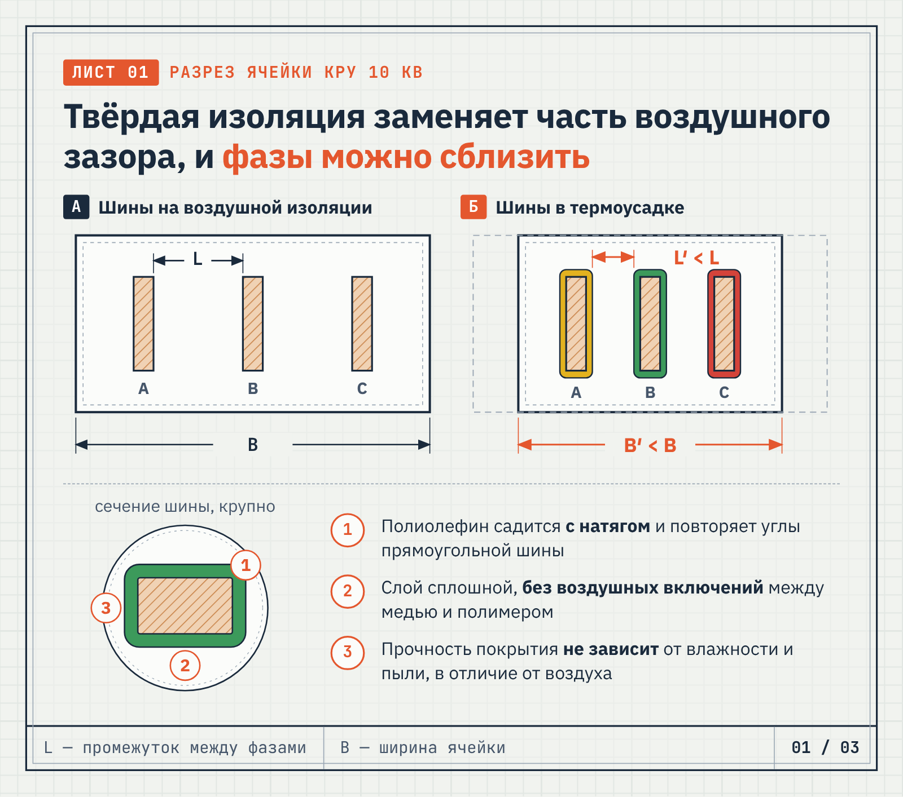
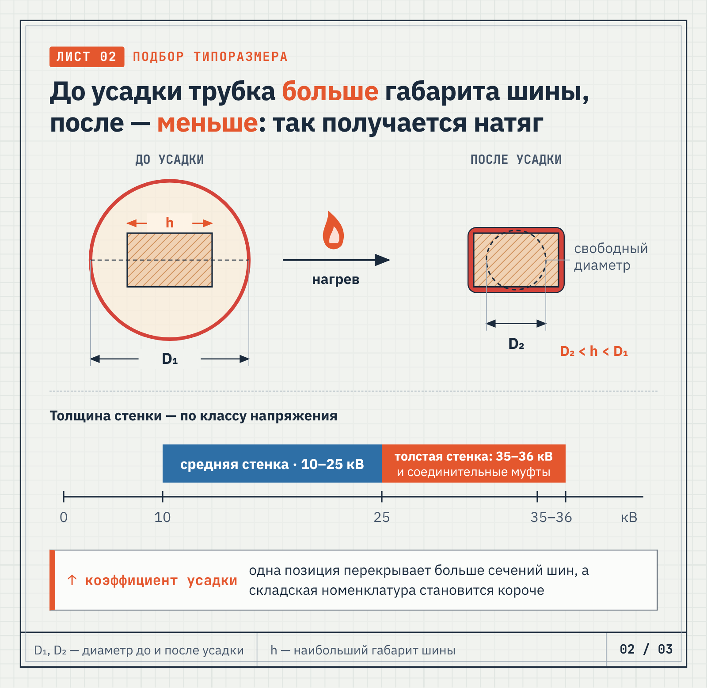
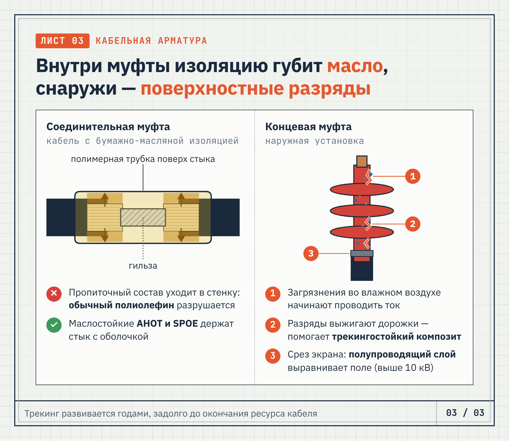

«Кросс-Контакт» · Техническая статья · энергетика
Техническая статья для поставщика кабельной арматуры: высоковольтная изоляция шин и кабелей 10 кВ
О заказчике«Кросс-Контакт» (kross-kontakt.ru) — московская компания, работающая с 1995 года: кабельная арматура и изоляционные материалы — муфты, термоусаживаемые трубки и ленты, герметики, мастики, провода.
Задача
Написать техническую экспертную статью для B2B-аудитории энергетики: как термоусаживаемые трубки изолируют шины и кабели 10 кВ, по каким параметрам их подбирать и где теряют качество при монтаже, с коммерческим блоком от имени поставщика.
Решение
Построила статью от инженерной задачи — тесной ячейки КРУ — к решению: чем твёрдая изоляция лучше воздушного промежутка, как читать типоразмер (диаметр до и после усадки, толщина стенки по классу напряжения), чем отличаются задачи соединительных муфт на маслонаполненном кабеле и наружных концевых муфт. Сравнение марок Raychem, 3M и ACS свела в таблицу, монтаж разложила на пять шагов с типовой ошибкой. Коммерческий блок собрала из реальных условий поставщика: нарезка, комплектность, сертификация, доставка.
Результат
Текст сдан в августе 2026 года. Для портфолио добавлены три инфографики-чертежа: разрез ячейки с шинами до и после изолирования, схема подбора типоразмера со шкалой классов напряжения и разрезы двух типов муфт.
Высоковольтная изоляция: термоусаживаемые трубки для шин и кабелей 10 кВ
В ячейке распределительного устройства 10 кВ места всегда не хватает. Проектировщик разводит сборные шины, считает воздушные промежутки и упирается в габарит корпуса: чтобы выдержать нормируемые расстояния, ячейку приходится делать шире.
Полимерная изоляция токоведущих частей снимает это ограничение. Она усиливает электрическую прочность там, где воздушного зазора уже недостаточно, и позволяет сблизить фазы без риска перекрытия.
Где термоусадка выигрывает у воздушного промежутка
Воздух как диэлектрик ненадёжен: его прочность падает при высокой влажности, а на опорных изоляторах оседает проводящая пыль. Твёрдая полимерная оболочка от этих факторов не зависит.
Высоковольтная термоусаживаемая трубка из радиационно-сшитого полиолефина при нагреве садится на шину с натягом. Она повторяет профиль шины вместе с углами и изгибами и образует сплошной слой без воздушных включений.
В эксплуатации такое покрытие даёт сразу несколько преимуществ:
- защита от перекрытия при случайном касании;
- цветовая маркировка фаз без наклеек;
- барьер для наведённых разрядов;
- стойкость к ультрафиолету и конденсату;
- сокращение габаритов распределительного устройства.
Отдельного обслуживания покрытие не требует. Усаженный полиолефин сохраняет форму при повторных нагревах: он размягчается, но не разрушается. Если покрытие повреждено, меняют только этот участок, а не всю шинную сборку.

Цвет покрытия заодно заменяет фазную маркировку: при обслуживании ячейки фаза читается сразу, без поиска бирок и наклеек.
Подбор материала под шину: типоразмер и класс напряжения
Изоляцию шин 10 кВ подбирают по двум параметрам: коэффициенту усадки и толщине стенки. Диаметр до усадки берут с запасом относительно наибольшего габарита шины, а диаметр после усадки заведомо меньше, чтобы материал сел плотно. Чем выше коэффициент усадки, тем шире диапазон сечений, который перекрывает одна позиция, и тем короче складская номенклатура монтажной организации.
Толщину стенки выбирают по классу напряжения и расстоянию между фазами. Среднестенные трубки обычно применяют на 10–25 кВ. Толстостенные выбирают для классов 35–36 кВ, а также ставят в соединительных муфтах, где нужен запас толщины над гильзой.
Распространённые марки отличаются толщиной стенки, классом напряжения и назначением. Основные позиции, с которыми работают проектировщики и монтажники:
| Марка | Стенка | Класс напряжения | Особенности |
|---|---|---|---|
| BPTM (Raychem) | средняя | до 25 кВ | усадка около 2,5:1, сохраняет эластичность до −40 °С |
| BBIT (Raychem) | толстая | до 36 кВ | подходит для гнутых шин и ячеек с минимальным зазором |
| BBI-A (3M) | средняя | 5–35 кВ | повышенная стойкость к трекингу |
| ABBM (ACS) | средняя | 10–35 кВ | стойкость к ультрафиолету и трекингу |
| ABBH (ACS) | толстая | 10–35 кВ | температура усадки +130 °С |
Медные и алюминиевые шины изолируют одними и теми же марками, разница только в подготовке поверхности. Если шина покрыта лаком или окислена, покрытие ляжет неровно и на границе останется воздушный карман.

Поэтому перед заказом измеряют не только сечение шины, но и её наибольший габарит: именно с ним сравнивают диаметр трубки до усадки.
Масло и трекинг: две задачи, два разных материала
Кабельная арматура работает в иных условиях, чем шинная сборка. В соединительных муфтах на кабелях с бумажно-масляной изоляцией пропиточный состав разрушает обычный полиолефин, поэтому здесь ставят маслостойкие марки AHOT и SPOE. У концевых муфт наружной установки причина отказа обычно другая: она связана с состоянием поверхности, а не с толщиной изоляции.
Трекинг развивается годами. Атмосферные загрязнения на поверхности муфты во влажном воздухе начинают проводить ток, поверхностные разряды выжигают в полимере проводящие дорожки, и изоляция теряет прочность задолго до окончания ресурса кабеля.
Против трекинга работают композитные составы с наполнителем, который отводит тепло от точки разряда. Поэтому для концевых муфт наружной установки выбирают трекингостойкие марки, а не обычный полиолефин.

На кабелях выше 10 кВ дополнительно применяют полупроводящие материалы. Они выравнивают напряжённость поля на срезе экрана, где градиент максимален и где без такого слоя разряд начинается раньше всего.
Монтаж: где чаще всего теряют качество
Сам материал подводит редко. Большинство дефектов, которые выявляют испытания повышенным напряжением, связаны с нарушением технологии усадки: перегревом, неравномерным прогревом или плохо подготовленной поверхностью. Порядок работ такой:
- Подготовка поверхности. Шину обезжиривают и притупляют острые кромки: на угле с малым радиусом стенка растягивается и теряет расчётную толщину.
- Примерка отрезка. Длину берут с перекрытием опорных точек, чтобы стык не пришёлся на зону крепления.
- Прогрев. Работают мягким пламенем горелки или промышленным феном, инструмент ведут по кругу от середины отрезка к краям.
- Контроль усадки. Материал должен облегать профиль без складок и пузырей, а на прямоугольной шине точно повторять углы.
- Выдержка. До подачи напряжения покрытию дают полностью остыть, иначе внутренние напряжения приведут к отслоению.
Чаще всего нарушают третий пункт: греют с одной стороны, полимер садится неравномерно, и под ним остаётся воздушная полость. Со временем она становится очагом частичных разрядов, которые разрушают изоляцию изнутри.
Поставка и подбор комплекта
«Кросс-Контакт» поставляет высоковольтные термоусаживаемые изделия Raychem (TE Connectivity), 3M и ACS со склада в Москве. Материал подбираем под задачу — по сечению шины, классу напряжения и условиям установки. Что получает заказчик:
- Автоматическая нарезка — режем материал на отрезки нужной длины по вашему списку, размечать его на объекте не придётся.
- Комплектность — кроме трубок отгружаем перчатки, юбки, гильзы и мастики, так что всё для муфты можно взять у одного поставщика.
- Сертификация — изделия прошли добровольную сертификацию по системе ГОСТ Р, документы передаём вместе с отгрузкой.
- Доставка — до терминала транспортной компании «Деловые Линии» груз отправляем бесплатно.
Проектным организациям готовим подборку аналогов: если позиция снята с производства или срок поставки не устраивает, предлагаем замену того же класса напряжения.
Пришлите чертёж ячейки или спецификацию по адресу info@kross-kontakt.ru, и мы рассчитаем расход по каждому типоразмеру. Считает технический специалист, поэтому в ответ вы получите рабочую спецификацию с длинами и количеством, а не прайс-лист.